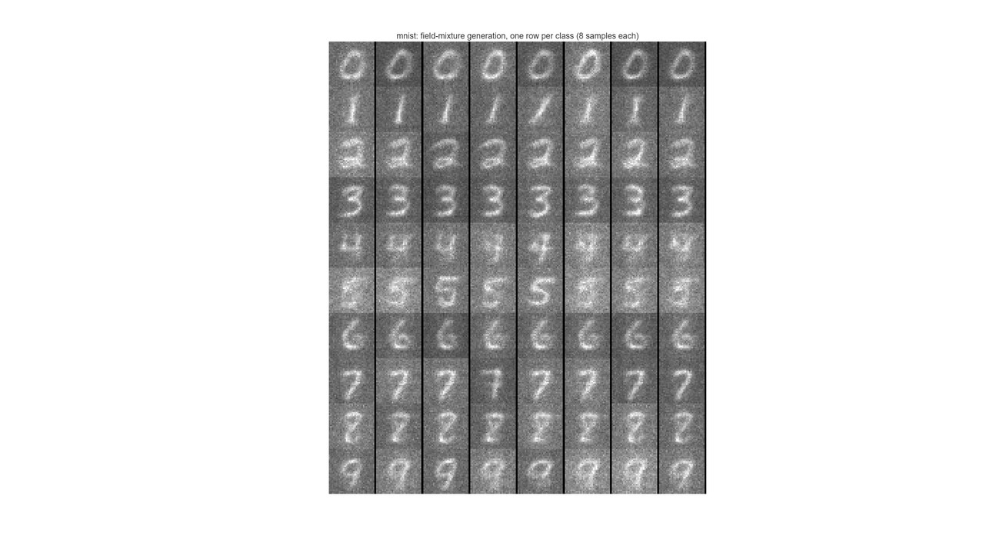
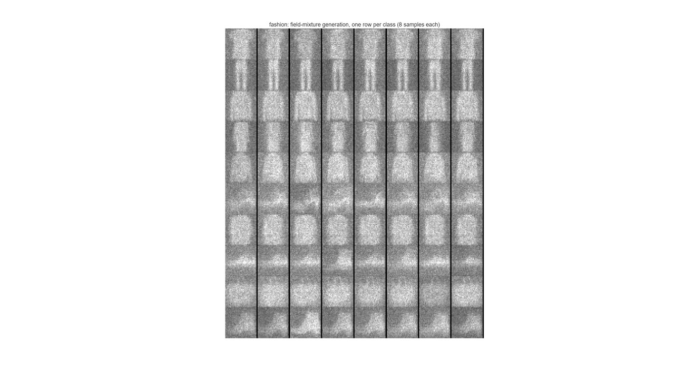
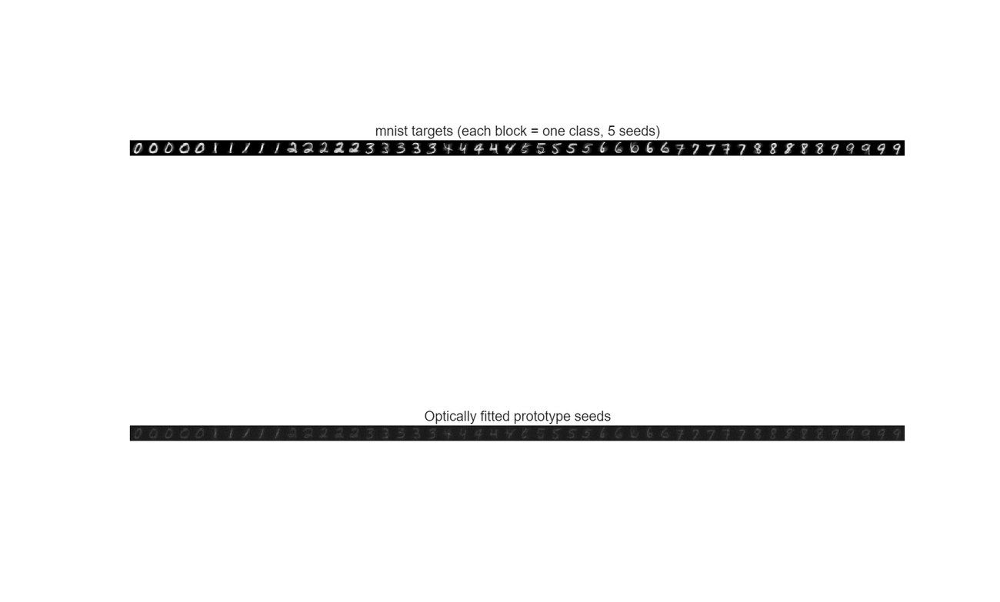
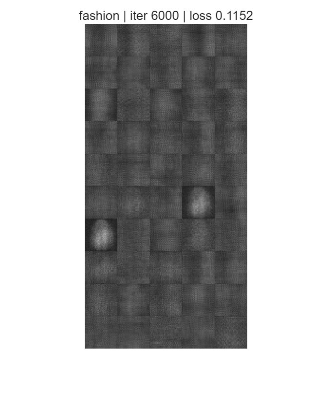

快照光学生成模型把「生成」实现为一段固定的光学前向：一个 32×32 的相位种子被编码到 SLM 上， 经两段自由空间传播和一片可学习的衍射解码层，在传感器上落地成图。 这里是它在 MNIST 与 Fashion-MNIST 上的十类条件生成复现——源码、已训练原型、结果图与实验日志。
先说清楚它不是什么：它不是把训练好的神经网络搬到光学硬件上跑。它是把解码器本身换成一片衍射光学元件， 让光在自由空间传播的物理过程就是那次前向计算。
一次曝光的时间里，光同时完成了三件事：加载隐变量（相位种子调制波前）、做线性变换（自由空间传播等价于一次卷积/傅里叶滤波）、 输出结果（传感器记录强度）。整个过程不需要时钟、不需要乘加器，也不需要把中间结果写回内存。
代价是三个硬约束。第一，光是非负的模拟量，传感器只能读强度，相位信息在读出时丢弃，所以网络必须设计成「相位进、强度出」。 第二，参数量被面积限制，解码层就是一片 400×400 的相位图，每个像素一个可训练参数。 第三，没有非线性，除了强度读出这一下平方，中间全是线性传播——这也是它只能做「快照」式生成的原因。
32×32 的种子被上采样 10 倍到 320×320，每个像素对应 SLM 上一个 8 µm 的相位调制单元。
两段传播之间夹一片 400×400 的可学习相位屏，相当于解码器的权重。
传感器读到的 400×400 强度图中心裁 320×320，再下采样 10 倍回到 32×32。
Chen 等人 2025 年发在 Nature 上的工作给了两条路线：快照式（一次前向）与迭代式（多次往返）。 本次复现的是前者，对应原文 Fig. 1 的装置与 Fig. 3c 的生成结果。
| 环节 | 参数 | 说明 |
|---|---|---|
| 相位种子 | 32 × 32 | 隐变量，取自数字编码器或类内原型 |
| 上采样编码 | 320 × 320 @ 8 µm | 对应原文式 (1)，零阶保持后乘到 SLM |
| SLM 调制 | λ = 520 nm | 相位型，区域外必须置零（见 04 节） |
| 第一段传播 | d₀,₁ = 120.1 mm | 角谱法，式 (2)(3) |
| 衍射解码层 | 400 × 400 相位 | 可训练参数，式 (4) |
| 第二段传播 | d₁,₂ = 96.4 mm | 角谱法 |
| 读出 | O = |U|² | 式 (5)，中心裁 320 后下采样 10× |
原文还包含一条迭代式路线（多次往返、更强的表达能力，但每次生成要多次曝光）以及多波长 RGB 扩展。 这两部分本次没有复现，原因写在 04 节的差异说明里。
每个类别生成 8 个样本，样本之间由类内原型的场空间混合产生差异。同一套解码层被所有类别共享—— 这正是它难的地方：一片固定的相位屏要同时服务十个类别。




| 指标 | MNIST | Fashion-MNIST |
|---|---|---|
| 原型拟合 MSE | 0.0082 | 0.0089 |
| 原型数量 | 10 类 × 5 | 10 类 × 5 |
| 每类生成样本 | 8 | 8 |
| 原型优化耗时 | ≈ 18 min | ≈ 18 min |
论文的端到端训练需要数据中心级别的算力预算。在有限的训练预算下直接端到端跑，会稳定塌缩到「条件均值解」—— 所有类别输出同一团平均图像。这里的做法是把它拆开，让每一步都能单独验收。
每类取 K = 5 个相位种子，全部种子与一片共享解码层一起作为自由参数，目标是「0.5 × 类均值 + 0.5 × 真实样本」的混合图。
训练分两段：先让种子逐任务轮流拟合（解码层用小学习率），再冻结解码层、热启动重拟合每个种子（抛光）。
产物就是 prototypes_mnist.mat / prototypes_fashion.mat。
对同一类的种子复数场做随机凸组合，再取相位投到 SLM 上，然后走一次正常的光学前向。 物理上这等价于把两张相位图叠加后重新量化，因此生成的样本仍落在同一个物理可实现集里，不是数字域的插值。
训练一个三层全连接 + 类别嵌入的数字编码器，把「噪声 z + 类别」映射到相位种子，监督目标是阶段一得到的种子。 这一步是纯数字回归，不参与光学损失，完成后就得到论文图 1 的完整管线。
这一节是本复现最有价值的部分——四个原因都实际踩过，按影响从大到小排列。
① SLM 区域外用零填充，注入了假的平面波。把 320×320 的相位图补零到 400×400 时，
exp(i·0) = 1，等于在四周加了一圈振幅为 1 的通光孔径。这圈平面波的衍射图样与种子无关、恒定不变，
却主导了传感器读数，于是所有训练都收敛到同一张「平均图」。修正是把 SLM 区域外的复振幅置零（暗孔径），
而不是相位置零。
② 共享解码层存在条件均值吸引子。解码层从随机初始化开始、对一批随机散斑种子做批量训练时， 梯度会先把它推向「所有目标的均值」，随后把种子锁死在这个盆地里。并行训练、交替训练、GS 算法都逃不出来。 逐任务流 + 低解码层学习率 + 冻结抛光的三件套才能绕开。
③ 单精度梯度噪声地板。角谱传播带 1/N² 归一化，原始损失的梯度量级只有 1e-7，正好卡在 float32 舍入边缘。 损失需要乘 1e6 把信噪比抬起来，否则梯度基本是噪声。
④ 类别条件信号被噪声淹没。32 维类别嵌入混进 1024 维噪声后，梯度信号被压掉几个数量级。 Adam 放大梯度无效，必须给编码器单独的学习率组，并用 FiLM 式的直通通路把类别信息送进去。
| 项目 | 论文 | 本复现 | 影响 |
|---|---|---|---|
| 训练方式 | 端到端联合优化 | 三阶段分解 | 最终光学结构与论文一致，但优化路径不同 |
| 多样性来源 | DDPM 教师采样 | 类内原型场混合 | 多样性较低，限于 5 个原型张成的流形 |
| 强度归一化 | 逐图最大值归一化 | 逐目标亮度匹配 | 影响 MSE 绝对值的可比性 |
| 多波长 RGB | 已实现 | 未复现 | 需三通道对齐与色差补偿 |
| 迭代式模型 | 已实现 | 未复现 | 需多次往返与 5 层解码器 |
| Van Gogh 高分辨生成 | 已实现 | 未复现 | 需 1000 步 DDPM 与更大算力预算 |
需要 MATLAB R2021b 或更新版本，以及 Deep Learning Toolbox。数据脚本会自动下载 MNIST 与 Fashion-MNIST。
% 阶段一：原型优化（每个数据集约 18 分钟） setenv('OGEN_DATASET','mnist'); train_prototypes setenv('OGEN_DATASET','fashion'); train_prototypes % 阶段二：生成样本网格（约 1 分钟） setenv('OGEN_DATASET','mnist'); generate_mixture setenv('OGEN_DATASET','fashion'); generate_mixture % 阶段三（可选）：编码器蒸馏，得到论文的完整管线（约 1.5 小时） setenv('OGEN_DATASET','mnist'); train_encoder_distill
源码、已训练原型与实验日志。原型权重可以直接加载出图，不需要重新训练。
prototypes_mnist.mat / prototypes_fashion.matREADME.md：环境、数据获取、每步预期输出download_data.mquickstart.m → run_demo.m →
再按需跑各 train_*.m。
@article{chen2025optical,
title = {Optical generative models},
author = {Chen, Shaowei and Li, Yuhang and Wang, Yide and Chen, Hong and Ozcan, Aydogan},
journal = {Nature},
volume = {644},
pages = {903--911},
year = {2025}
}
代码以 MIT 许可发布。论文中的插图版权归原作者与期刊所有，此处仅用于结果对照。
这是一个独立复现，不是论文作者的官方实现。文中标注「未复现」的部分确实没有做， 不要在引用本页结论时把它们当作已完成。